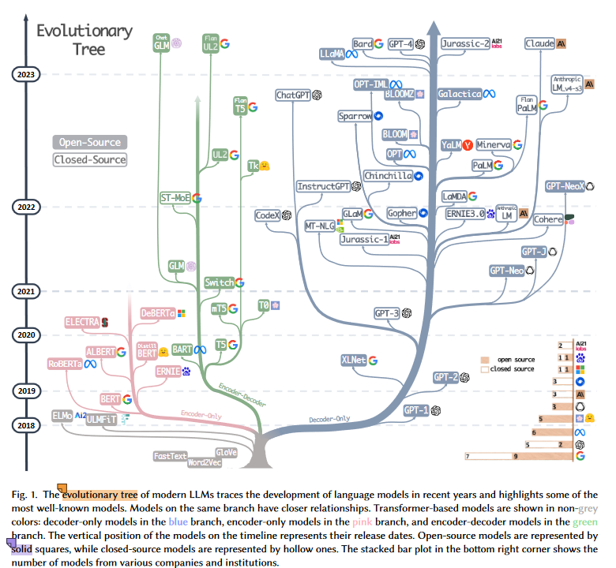
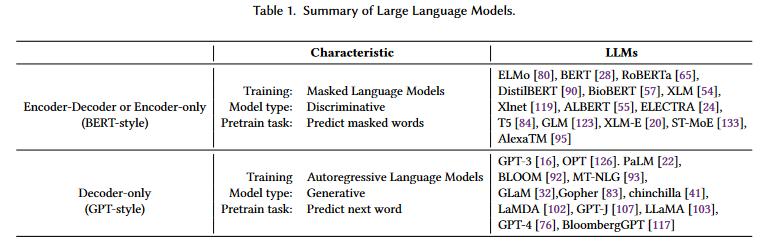
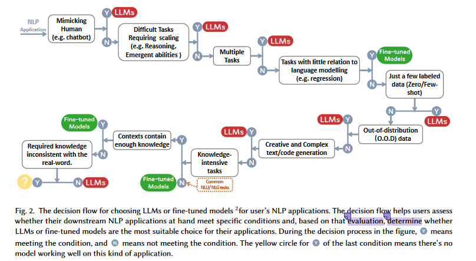

大模型综述（1）
this blog is for survey of LLMs (Large language Models)
综述：Harnessing the Power of LLMs in Practice ：A Survey on ChatGPT and Beyond
https://mp.weixin.qq.com/s/wxgP42EI1ypcLKPsVqdH5A
http://arthurchiao.art/blog/llm-practical-guide-zh/
abstract
本文是一份大语言模型（LLMs）实用指南， 目的是帮助从业者和用户更好地完成他们的==自然语言处理（NLP）==相关任务 —— NLP 是 LLM 的典型使用场景（下游）。本文将从模型、数据和下游任务的角度讨论和分析 LLM 的选型和使用
- 首先简要介绍 GPT 风格和 BERT 风格的大语言模型；
- 然后讨论预训练数据、训练数据和测试数据对模型选型的影响；
- 然后详细讨论大语言模型适合和不适合哪些自然语言处理任务（use and non-use cases）。
此外，我们还探讨了大模型的 spurious biases，以及工程角度的效率、成本和延迟等重要因素， 以便从业者对实际部署大模型有一个全面了解。
前言
我们从模型、数据和下游任务 的角度对LLMs（large language model）的使用进行讨论和见解。
- 首先，我们对当前 GPT 和 BERT 风格的LLMs进行介绍和简要总结。
- 然后，我们讨论预训练数据、训练数据和测试数据的影响。
- 最重要的是，我们详细讨论了大语言模型在各种自然语言处理任务中的使用和不使用案例，例如知识密集型任务、传统自然语言理解任务、自然语言生成任务、涌现能力和注意事项用于特定任务。我们提出了各种用例和非用例（use cases and non-use cases）来说明LLMs在现实场景中的实际应用和局限性。我们还尝试了解数据的重要性以及与每个 NLP 任务相关的具体挑战。此外，我们还探讨了虚假偏差对LLMs的影响，并深入研究了其他基本考虑因素，例如效率、成本和延迟，以确保全面了解在实践中部署LLMs。本综合指南旨在为研究人员和从业者提供与LLMs合作的宝贵见解和最佳实践，从而使这些模型能够在广泛的 NLP 任务中成功实施。定期更新的LLMs实用指南资源精选列表可在 https://github.com/Mooler0410/LLMsPracticalGuide 找到。
近年来，大语言模型的快速发展对自然语言处理领域产生了革命性的影响 [12, 128, 131]。 这些强大的模型在各种 NLP 任务 —— 从自然语言理解（NLU）到生成式任务（generation tasks）—— 中都展现出了巨大的潜力，甚至为通用人工智能**（AGI）铺平了道路。
然而，有效且高效地利用这些模型需要实际了解它们的功能和局限性，以及 NLP 中涉及的数据和任务。
本文目的
作为一份给大模型从业者和用户的指南，本文主要关注下游 NLP 任务中如何使用 LLM。例如，
- 为什么选择或不选择某些 LLM；
- 如何根据模型大小、计算要求和特定领域预训练模型的可用性等等因素，选择最合适的 LLM。
- 为从业人员和最终用户提供所需的实用知识，帮助他们成功利用 LLM 的强大功能完成自己的 NLP 任务
工作： - 首先，我们的工作通过讨论最重要的模型（如 GPT 式和 BERT 式架构）简要介绍了 LLM。
- 然后，我们从数据角度深入探讨影响模型性能的关键因素，包括预训练数据、训练/调整数据和测试数据。
- 最后，也是最重要的一点，我们深入探讨了各种具体的 NLP 任务，深入分析（offering insights into）了 LLM 在知识密集型任务、传统 NLU 任务和生成任务中的适用性，以及这些模型所具备的新兴能力和挑战性的现实世界场景。
- 我们提供了详细的示例，以突出 LLM 在实际应用中的成功案例和局限性。
为了分析大型语言模型的能力，我们将它们与微调模型进行了比较。目前，关于大型语言模型和微调模型还没有公认的定义。考虑到实用性，我们在文章中提出了它们的定义： - LLM 是在大量数据集上预先训练的庞大语言模型，无需针对特定任务的数据进行调整；
- 但这并不意味着大模型不可以微调，大模型也可以微调，提高对于任务的性能（few-shot那一块）。但是大模型提出来是在一个大的数据集上训练的，能处理的任务更加的广泛。更加的通用，泛化能力强。
- fine-tuned模型通常是较小的语言模型，它们也经过预训练，然后在较小的、针对特定任务的数据集上进一步调整，以优化其在该任务上的性能。
- 针对特定的数据集，有点像“领域专家”
本文总结了以下 LLM 实用指南：
- 针对特定的数据集，有点像“领域专家”
- 自然语言理解：在数据分布不均或训练数据极少场景下，LLM 卓越的泛化能力（generalization ability）；
- 自然语言生成：利用 LLM 的能力，为各种应用程序创建连贯、上下文相关的高质量文本；
- 知识密集型任务：利用 LLM 中存储的大量知识，解决一些需要特定领域专业知识或世界常识（general world knowledge）的任务；
- 推理能力：了解和利用 LLM 的推理能力，提升基于上下文的决策能力和解决问题能力。
模型实用指南（PRACTICAL GUIDE FOR MODELS）
本节简要介绍当前业界最先进的 LLM。 这些模型在训练策略、模型架构和使用场景上有所不同。为了更清晰地理解 LLM 的发展， 本文将它们分为两种类型：
- encoder-decoder or encoder-only
- decoder-only

几点发现： - decoder-only 模型逐渐成为 LLM 的主要发展趋势。
- LLM 早期阶段，encoder-only 和 encoder-decoder 模型更受欢迎；
- 随着 2021 年 GPT-3 的横空出世，decoder-only 模型完成了一次漂亮的翻身仗；
- 在 BERT 带来的最初爆炸性增长之后，encoder-only 模型逐渐开始失宠；
- OpenAI 在 LLM 领域始终保持领先地位。其他公司和机构正在努力追赶。 这种领导地位可能归因于 OpenAI 对其技术路线的坚守，即使最初大家并不看好这条路线；
- Meta 对开源 LLM 做出了重大贡献，并促进了 LLM 的研究。 在考虑对开源社区尤其是 LLM 相关的贡献时，Meta 是最慷慨的商业公司之一，Meta 开发的所有 LLM 都是开源的；
- LLM 表现出闭源的趋势。
- LLM 早期阶段（2020 年之前），大多数模型都是开源的；
- 随着 GPT-3 的推出，公司越来越倾向于闭源他们的模型，如 PaLM、LaMDA 和 GPT-4:
- 因此，学术研究人员进行 LLM 训练实验变得更加困难，基于 API 的研究可能成为学术界的主要方法；
- encoder-decoder 模型仍然还有前途。
- 业界仍然在这个方向积极探索，且大部分都是开源的；
- Google 对开源 encoder-decoder 架构做出了重大贡献，虽然 decoder-only 模型的灵活性和多功能性使得 Google 对这个方向的坚持似乎前途有些暗淡。

BERT-style Language Models: Encoder-Decoder or Encoder-only
自然语言数据易于获取。为了更好地利用超级数据集，人们已经提出了很多无监督训练范式（unsupervised training paradigms）， 这也促进了自然语言的无监督学习（unsupervised learning）。
这其中，一种常见的方式是在给定上下文的情况下，预测句子中掩掉（masked）的单词。 这种训练范式被称为遮掩语言模型（Masked Language Model，MLM）
（AE ：Autoencoder Language Models）
- 模型能深入理解单词之间以及单词与上下文的关系，
- 使用 Transformer 架构 等技术在大量文本语料库上进行训练。
典型模型包括 - BERT [28]
- RoBERTa [65]
- T5 [84]。
这种模型在许多 NLP 任务（如情感分析和 named entity 识别）中取得了 state-of-the-art 的结果， 已经成为自然语言处理领域的重要工具。
尽管语言模型通常在架构上是任务不可知的（task-agnostic）， 但都需要在特定下游任务的数据集上进行微调。
GPT-style Language Models: Decoder-only
研究人员发现，扩展语言模型的参数规模（scaling up） 能显著提高少样本（few-shot）甚至零样本（zero-shot）性能[16]。 少样本和零样本最成功的模型是自回归语言模型 （Autoregressive Language Models，ALM），
- 这些模型的训练方式：给出前面的单词，生成这句话的下一个单词。
- 这些模型已被广泛用于文本生成和问题回答等 NLP 任务。
典型的自回归语言模型包括， - GPT-3 [16]
- OPT [126]
- PaLM [22]
- BLOOM [92]
这其中，GPT-3 是一个划时代的模型，它首次通过提示（prompting）和上下文学习（in-context learning） 展示了少样本/零样本也能取得不错的性能，展现了自回归语言模型的优越性。
还有一些模型针对特定任务进行了优化，如 - CodeX [2]：代码生成
- BloombergGPT [117] ：金融领域
最近的突破是 ChatGPT，它专门针对对话任务优化了 GPT-3，从而在各种实际应用中 互动性、连贯性，以及更好的上下文理解能力。
更加适用于生成类型的任务
ChatGPT：总结：
- BERT适用于需要深度理解上下文的任务，它主要用于双向任务的分类和理解。
- GPT适用于生成任务，它主要用于自然语言生成，如文本生成、对话生成和文本摘要等。
- 对于某些任务，BERT和GPT可以相互补充和结合使用，以获得更好的性能，例如，BERT可以用于理解上下文，然后GPT可以用于生成自然语言响应。
问答系统和对话生成，人机对话
对话生成（Dialog Generation）和问答系统（Question Answering System）都属于自然语言处理领域，但它们在任务和功能上有明显的区别：
- 任务目标：
- 对话生成：对话生成系统的主要目标是生成自然流畅的对话文本，模拟人与人之间的对话交流。这包括生成对话中的问题、回答和对话内容，通常是一个连续性的文本流。对话生成系统通常用于构建聊天机器人、虚拟助手、客服代理等。
- 问答系统：问答系统的主要目标是回答特定问题的文本，根据用户提出的问题从给定的数据或知识库中提取或生成正确的答案。问答系统通常依赖于文档检索、自然语言理解和信息提取技术，以提供准确的答案。
- 输入与输出：
- 对话生成：对话生成系统通常接受一系列对话轮次（例如，用户问题和系统回应）作为输入，并生成连续的文本响应作为输出，可以是一句话或多句话的对话。
- 问答系统：问答系统接受用户提出的问题（通常是单个问题）作为输入，并生成一个准确的答案作为输出。答案通常是短文本或短语。
- 数据源：
- 对话生成：对话生成系统通常不需要特定的数据源，可以是基于事先定义的规则、预训练模型或从实际对话中学习的数据。
- 问答系统：问答系统需要一个特定的数据源，通常是包含问题和答案的知识库、文档集合或数据库。系统需要从这些数据源中检索信息以回答用户问题。
- 应用领域：
- 对话生成：对话生成主要应用于创建具有自然语言交互能力的应用程序，如聊天机器人、虚拟助手、社交媒体机器人等。
- 问答系统：问答系统通常应用于信息检索、知识库查询、自动问答、搜索引擎、智能搜索等需要准确回答用户问题的领域。
虽然对话生成和问答系统有不同的任务和用途，但它们也可以在某些情况下结合使用。例如，一个问答系统可以用于从知识库中提取答案，然后将答案转化为自然语言并与用户进行对话以提供更友好的用户体验。因此，这两种技术通常可以相互补充，根据具体需求进行选择和整合。
思考
1、感觉任务的要求是偏问答系统和检索
2、如何构造数据集
数据：实用指南
在本节中，我们将讨论数据在为下游任务选择合适模型时的关键作用。数据对模型有效性的影响始于预训练阶段，并一直持续到训练和推理阶段。
注意：
- LLMs generalize better than fine-tuned models in downstream tasks facing out-of-distribution data, such as adversarial examples and domain shifts.
- LLMs are preferable to fine-tuned models when working with limited annotated data, and both can be reasonable choices when abundant annotated data is available, depending on specific task requirements.
- It’s advisable to choose models pre-trained on fields of data that are similar to downstream tasks.
Pretraining data
预训练数据在大语言模型的开发中起着关键作用。
- 作为 LLM 超能力（remarkable capabilities）[5，47] 的基础， 预训练数据的质量、数量和多样性显著影响 LLM 的性能[124]。 常用的预训练数据包括多种文本数据，例如书籍、文章和网站。 数据经过精心挑选，以确保全面代表人类知识、语言差别和文化观点。
- #思考
- 对于自身的任务也需要数据集能够充分的体现任务的要求，要问答/查询的内容。
- #思考
- 预训练数据的重要性在于它能为语言模型提供丰富的单词知识、语法、句法和语义理解，以及识别上下文和生成连贯反应的能力。 预训练数据的多样性也对模型性能起着至关重要的作用，LLM 的性能高度依赖于预训练数据的组成。LLM 的选择在很大程度上取决于预训练数据的成分。 例如，
- PaLM [22] 和 BLOOM [92] 多语言任务（multilingual tasks）和机器翻译方面表现出色，因为它们有丰富的多语言预训练数据；
- PaLM 还很擅长问答任务，因为预训练数据中包含大量社交媒体对话和书籍语料库 [22]；
- GPT-3.5（code-davinci-002）预训练数据集中集成代码数据，因此代码执行和代码补全 能力很强。
简而言之，在针对 NLP 任务做 LLM 选型时，建议选择那些在类似数据领域上进行过预训练的模型。
Finetuning data
如果已经有了通用大模型，接下来想部署到线上环境提供服务，那根据手头 标注数据（annotated data）的多少，
- 零（zero）
- 少（few）
- 丰富（abundant）
可以在部署之前先对大模型进行配置调整或模型微调。
Zero annotated data ：通用大模型 + zero-shot 配置
这种情况即没有标注数据，那就没有微调的可能了；在配置方面，将 LLM 设置为 zero-shot 是最合适的。LLM 的 zero-shot methods [120] 已经比之前更好。此外，这种场景由于模型参数保持不变remain unaltered）， 也不存在参数更新过程（parameter update process）， 因此可以避免灾难性遗忘（catastrophic forgetting）[49]。
- “灾难性遗忘”（Catastrophic Forgetting）是指神经网络在学习新任务时忘记了之前学习的任务的现象。这是神经网络训练中一个常见的问题，特别是在迁移学习（Transfer Learning）或连续学习（Continual Learning）的情况下。当神经网络被训练用于多个任务时，它有时会非常快速地忘记以前学习的任务，从而在新任务上表现得更好。
- 灾难性遗忘通常是由于神经网络的权重更新机制造成的。当神经网络学习新任务时，它会调整权重以适应新的数据和目标。然而，这些权重的调整可能导致之前学习的任务的权重被覆盖或忘记，从而降低了在以后执行这些任务时的性能
Few annotated data：通用大模型 + few-shot in-context learning
这种情况下，可以将手头少量的 few-shot examples 直接通过 prompt 输入到 LLM 中， 这被称为上下文学习==（in-context learning）==， 这些数据可以有效地指导 LLM 针对具体任务进行优化（generalize to the task）。（prompt engineering）
- [16] 中指出，one-shot 和 few-shot 性能取得了显著的提高，甚至可以与 SOTA fine-tuned open-domain 模型的性能相当。
- 通过 scaling[16]，LLMs 的 zero/few-shot 能力可以进一步提高。
- 还有人提出了一些 few-shot 学习方法来增强微调模型，例如 meta-learning[56]或 transfer learning[88]。但是，由于微调模型的规模较小且容易过拟合，性能可能不如使用 LLMs。
Abundant annotated data：丰富的标注数据：通用大模型/微调模型
如果有大量特定任务的注释数据，就可以考虑微调模型和 LLM。在大多数情况下，微调模型可以很好地适应数据。在这种情况下，选择使用微调模型还是 LLM 取决于特定任务，也取决于许多因素，包括所需的性能、计算资源和部署限制。
- 大多数情况下，对模型进行微调（fine-tuning the model）可以很好地适应数据；
- 通用模型的一个优势是可用于满足一些约束条件，例如隐私 [99]。
总之，这种情况下使用微调模型还是 LLM 就看具体任务以及所需的性能、计算资源和部署约束等因素了。
小结：通用模型 vs. 微调模型的选型
简而言之
- 不管标注数据有多有少，通用大模型都是可以用的；
- 有丰富的 annotated data 时可以考虑使用微调模型。
Test data/user data
在部署 LLM 用于实际任务时，经常面临测试/用户数据与训练数据之间分布差异导致的性能问题。 这些差异可能涉及到
- domain shifts [132]
- out-of-distribution variations [31]
- adversarial examples [82]
它们极大降低了微调模型在实际应用中的有效性。 原因是微调模型都是基于特定数据分布拟合的，generalize to OOD data 的能力较差。
另一方面，通用模型在这种情况表现得相当好，因为它们没有明确的拟合过程。 此外，最近的人类反馈强化学习（Reinforcement Learning from Human Feedback， RLHF）进一步增强了 LLM 的泛化能力[77]。例如，
- InstructGPT 展示了在 a wide range of tasks (各种任务)的多种指令中的熟练理解能力，甚至偶尔还能理解混合语言指令，尽管这样的指令很少。
- ChatGPT 在大多数 adversarial and out-of-distribution (OOD) 分类和翻译任务上表现出一致的优势 [109]。 它在理解对话相关的文本方面的优越性，使得它在 DDXPlus 数据集 [101]上表现出色，这是一个设计用于 OOD 评估的医学诊断数据集。
PRACTICAL GUIDE FOR NLP tasks:任务实用指南
In this section, we discuss in detail the use cases and no use cases for LLMs in various downstream NLP tasks and the corresponding model abilities. And in Figure 2, we summarize all discussions into a decision flow. It can be a guide for a quick decision while facing a task.
很多时候，“大模型很好！”这个断言后紧跟着的问题就是“大模型怎么用，什么时候用？”，面对一个具体任务时，我们是应该选择微调、还是不假思索的上手大模型？这篇论文总结出了一个实用的“决策流”，根据“是否需要模仿人类”，“是否要求推理能力”，“是否是多任务”等一系列问题帮我们判断是否要去使用大模型。

traditional NLU（natural language model）tasks
传统的 NLU 任务是 NLP 中的一些基本任务，包括文本分类、命名实体识别（NER）、entailment prediction等。其中许多任务旨在作为大型人工智能系统（这里和大模型不一样，这里更像是多个任务多个模型的组合）的中间步骤，例如用于构建知识图谱的 NER。
在传统的 NLU 任务中，微调模型通常是比 LLM 更好的选择，当需要很强的泛化能力的时候LLM能够提供帮助。
No use case.
- 在大多数自然语言理解任务中，如 GLUE[106] 和 SuperGLUE[105] 中的任务，如果这些任务有丰富的注释良好的数据，并且测试集上包含极少的分布外示例（OOD），那么微调模型仍然有更好的性能。对于不同的任务和数据集，小型微调模型与 LLM 之间的差距是不同的。
- 文本分类：在文本分类中，LLMs 普遍逊色于微调模型；
- 情感分析：在 IMDB 与 SST 任务上大模型与微调模型表现相仿，而在如毒性监测任务中，几乎所有的大模型都差于微调模型；
- 对于另一项标志性文本分类任务–毒性检测，差距则要大得多。所有 LLM 在这项任务上都表现不佳，在 CivilComments [13] 上，即使是最好的 LLM 也只比随机猜测 [59] 好。另一方面，大多数流行的微调模型可以获得更好的性能[33]，而 Perspective API 3 仍然是检测毒性的最佳模型之一。该应用程序接口由一个基于多语言 BERT 的模型和从该模型中提炼出的几个较小的单语言 CNN 提供支持，该模型是根据公开可用的毒性数据和几个较小的单语言 CNN 调整的。这可能是由于毒性是由语言表达中的细微差别定义的，而大型语言模型无法仅根据所提供的输入准确理解这项任务。
- 自然语言推理：在 RTE 与 SNLI 上，微调模型优于 LLMs，在 CB 等数据中，LLMs与微调模型相仿；
- 问答：在 SQuADv2、QuAC 和许多其他数据集上，微调模型具有更好的性能，而在 CoQA 上，LLMs 表现与微调模型性能相仿；
- 信息检索：LLMs 尚未在信息检索领域广泛应用，信息检索的任务特征使得没有自然的方式为大模型建模信息检索任务；
- 命名实体识别：在命名实体识别中，大模型仍然大幅度逊色于微调模型，在 CoNLL03 上微调模型的性能几乎是大模型的两倍，但是命名实体识别作为一个经典的 NLP 中间任务，很有可能会被大模型取代。
- 这段文本讨论了一些低级别中间任务，这些任务不是为了常规用户而是为了高级任务而设计的，例如命名实体识别（NER）和依赖解析。作者指出，目前的语言模型（LLMs）在这些任务上的表现不足，因为LLMs的当前评估主要集中在实际应用任务上。根据可用的评估结果，对于NER任务，LLMs仍然面临挑战，而经过微调的模型性能大约是LLMs的两倍。作者认为这些中间任务可能会很快消失，因为LLMs可以在不依赖这些中间任务的情况下完成高级任务（例如，依赖解析用于编码任务；NER用于某些文本生成任务）。
简而言之，这段文本指出LLMs在一些特定任务上的表现不够理想，但随着LLMs的发展，它们可能会取代这些任务，因此这些任务可能会变得不再重要。
- 这段文本讨论了一些低级别中间任务，这些任务不是为了常规用户而是为了高级任务而设计的，例如命名实体识别（NER）和依赖解析。作者指出，目前的语言模型（LLMs）在这些任务上的表现不足，因为LLMs的当前评估主要集中在实际应用任务上。根据可用的评估结果，对于NER任务，LLMs仍然面临挑战，而经过微调的模型性能大约是LLMs的两倍。作者认为这些中间任务可能会很快消失，因为LLMs可以在不依赖这些中间任务的情况下完成高级任务（例如，依赖解析用于编码任务；NER用于某些文本生成任务）。
总之，对于大多数传统自然语言理解的任务，微调模型的效果更好(就在benchmark的数据集上的表现和计算成本)。LLM模型通常是fine-tuned model的10/100倍大小；One possible cause for the inferior performance of LLMs on certain tasks can be the design of instructions/prompts.将 IR 和句子标记等任务的输入转换为few/zero-shot形式并非易事。另一方面，微调模型的能力上限尚未达到，一些方法如 FLAN-tuning [67] 可以进一步提高 NLU 任务的性能。另一个有趣的发现是，在 NLU 任务上，经过微调，masked language models（如 T5[85]）比相同规模的大多数自回归语言模型更好，而最近的一些结果表明，这一差距可以通过以下方式弥补：scaling[22]。
Use cases
- 代表性任务之一是杂项文本分类(miscellaneous text classification)[59]。与情感分析等经典的特定领域文本分类任务相比，杂项文本分类处理各种主题和类别，这些主题和类别之间可能没有明确或牢固的关系。
- 它更接近现实世界的案例，并且很难格式化以使用微调模型。
- 另一个是对抗性自然语言推理（ANLI）[74]。这是一个困难的数据集，由三轮（R1、R2 和 R3）对抗性挖掘的自然语言推理问题组成。
- LLM 在 ANLI 上表现出了卓越的性能，尤其是在 R3 和 R2 上。这两个例子都表明，在传统的 NLP 任务中，LLM 对分布外(OOD)和稀疏注释的数据(zero-shot，few-shot)具有出色的泛化能力，超过了微调模型的能力
同时，在一些小众的领域，如 Miscellaneous Text Classification，Adversarial NLI 等任务中 ，LLMs 由于更强的泛化能力因而具有更好的性能，但是在目前而言，对于有成熟标注的数据而言，微调模型可能仍然是对传统任务的最优解
Generation tasks
自然语言生成大致包括两大类任务，其目标是创建连贯、有意义且与上下文相适应(切合语境)的符号序列。
- 第一类任务侧重于将输入文本转换为新的符号序列，例如段落摘要和机器翻译等任务。
- 第二类是 "开放式 "生成，目的是从头开始生成文本或符号，以准确匹配输入描述，例如编写电子邮件、撰写新闻文章、创作虚构故事和编写代码。
由于具有很强的生成能力和创造力，LLM 在大多数生成任务中都表现出优势。
Use cases
生成任务要求模型全面了解输入内容或要求，并具有一定的创造性。这是LLM所擅长的。
- 文本摘要：对于文本摘要而言，如果使用传统的如 ROUGE 等的自动评估指标，LLMs 并没有表现出明显的优势，但是如果引入人工评估结果，LLMs 的表现则会大幅优于微调模型。这其实表明当前这些自动评估指标有时候并不能完整准确的反应文本生成的效果；
- 机器翻译：对于机器翻译这样一个拥有成熟商业软件的任务而言，LLMs 的表现一般略逊于商业翻译工具，但在一些冷门语言的翻译中，LLMs 有时表现出了更好的效果，譬如在罗马尼亚语翻译英语的任务中，LLMs 在零样本和少样本的情况下击败了微调模型的 SOTA；
- 在机器翻译（MT）中，尽管考虑到 BLEU[78] 等一些自动指标，LLM 的平均性能略逊于一些商业翻译工具[45]，但 LLM 可以胜任翻译工作。LLM 尤其擅长将一些低资源语言文本翻译成英语文本，例如在 WMT’16 的罗马尼亚语-英语翻译[11]中，zero-shot或few-shot LLM 的表现优于 SOTA 微调模型[22]。这主要是由于英语资源构成了预训练数据的主要部分（这里需要和下面的任务区分）。BLOOM [92] 在更多的多语言数据上进行了预训练，因此在富资源和低资源翻译中都能获得更好的翻译质量。另一个有趣的发现是，BLOOM 在罗曼语之间实现了良好的翻译质量，即使是来自加利西亚语的翻译也是如此，而加利西亚语并不包含在预训练数据中。一个合理的解释是，来自同一语言组中某些语言的文本可以帮助 LLMs 从相似性中学到更多。如果能在预训练数据中加入更多的多语言文本，翻译能力可能会进一步提高。
但是在no use case的案列中，英语翻译成少有的语言的时候就会有fine-tuned model效果略优于LLMs，可能是由于其余的翻译样本之间无法互补，而且没有学习到细节
- 这样其实还是再强调在少样本或者零样本上，LLMs更加的合适
- 在机器翻译（MT）中，尽管考虑到 BLEU[78] 等一些自动指标，LLM 的平均性能略逊于一些商业翻译工具[45]，但 LLM 可以胜任翻译工作。LLM 尤其擅长将一些低资源语言文本翻译成英语文本，例如在 WMT’16 的罗马尼亚语-英语翻译[11]中，zero-shot或few-shot LLM 的表现优于 SOTA 微调模型[22]。这主要是由于英语资源构成了预训练数据的主要部分（这里需要和下面的任务区分）。BLOOM [92] 在更多的多语言数据上进行了预训练，因此在富资源和低资源翻译中都能获得更好的翻译质量。另一个有趣的发现是，BLOOM 在罗曼语之间实现了良好的翻译质量，即使是来自加利西亚语的翻译也是如此，而加利西亚语并不包含在预训练数据中。一个合理的解释是，来自同一语言组中某些语言的文本可以帮助 LLMs 从相似性中学到更多。如果能在预训练数据中加入更多的多语言文本，翻译能力可能会进一步提高。
- 开放式生成：在开放式生成方面，显示是大模型最擅长的工作，LLMs 生成的新闻文章几乎与人类编写的真实新闻无法区分，在代码生成、代码纠错等领域 LLMs 都表现了令人惊讶的性能。
No use case.
微调模型，如 DeltaLM+Zcode [118]，在大多数资源丰富的翻译和资源极少的翻译任务中仍然表现最佳。
- 在资源丰富的机器翻译中，微调模型的性能略优于 LLM [22, 92]。而在资源极其匮乏的机器翻译中，如英语-哈萨克语翻译，微调模型的表现明显优于 LLM。
这里和机器翻译那一块有点冲突- 可能是fine-tuned model的精细化控制导致的
- 在某些情况下，小型微调模型可以更好地进行精细控制，因为它们可能更容易调整以适应任务特定的需求。
- 可能是fine-tuned model的精细化控制导致的
Knowledge-intensive tasks
知识密集型 NLP 任务指的是一类非常依赖背景知识、特定领域专业知识或一般现实世界知识的任务。 这些任务超越了简单的模式识别或语法分析，需要对我们的现实世界拥有“常识”并能正确的使用。它们高度依赖于对特定实体、事件和现实世界常识的记忆和适当(正确)利用。
- LLMs拥有丰富的现实世界知识，在知识密集型任务中表现出色。
- 当知识要求与学习到的知识不匹配时，或者面对只需要上下文知识的任务时，LLMs 就会陷入困境。
- 个人感觉大模型只有预训练，没有微调，模型可能对任务的匹配不高
use cases
一般来说，有了数十亿个训练词库和参数，LLM 比微调模型拥有更多的真实世界知识
- 闭卷问答：在 Closed-book Question-Answering 任务中，要求模型在没有外部信息的情况下回答事实性的问题，在许多数据集如 NaturalQuestions、WebQuestions、TriviaQA 上 LLMs 都表现了更好的性能，尤其在 TriviaQA 中，零样本的 LLMs 都展现了优于微调模型的性能表现；
- 大规模多任务语言理解：大规模多任务语言理解（MMLU）包含 57 个不同主题的多项选择题，也要求模型具备一般性的知识，在这一任务中最令人印象深刻的当属 GPT-4，在 MMLU 中获得了 86.5% 的正确率。
- 此外，Big-bench[96]中的一些任务旨在探测 LLM 并推断其未来能力（probe LLMs and extrapolate their future capabilities），这些任务严重依赖于对现实世界知识的记忆。在这类任务中，一些 LLM 的表现优于人类的平均水平，甚至与人类的最佳表现不相上下。例如，“印度教知识”（Hindu_knowledge）任务要求模型提供有关印度教神话的事实；“元素周期”（Periodic Elements）任务要求模型具有从元素周期表中预测元素名称的能力；“物理”（Physics）任务则通过要求模型提供解决给定物理问题所需的公式来测试模型的物理知识。
No use cases
值得注意的是，在知识密集型任务中，大模型并不是百试百灵，有些时候，大模型对现实世界的知识可能是无用甚至错误的，这样“不一致”的知识有时会使大模型的表现比随机猜测还差。如重定义数学任务（Redefine Math）中要求模型在原含义和从重新定义的含义中做出选择，这需要的能力与大规模语言模型的学习到的知识恰恰相反，因此，LLMs 的表现甚至不如随机猜测。
There are some other tasks requiring knowledge different from that learned by LLMs. The required knowledge is not that learned by LLMs about the real world. In such tasks, LLMs are not notably superior.
- 有些任务只要求模型捕捉上下文中的自含知识。输入的上下文知识足以让模型做出预测。对于这些任务，小型微调模型可以很好地完成。机器阅读理解（MRC）就是这样一项任务。MRC 任务提供几个段落，要求模型根据这些段落预测问题的答案。我们在上一节讨论了 MRC，因为它也是一项传统的 NLU 任务
- 另一种情况是，LLMs 中有关现实世界的知识对任务毫无用处，甚至所需的知识与现实世界相反。因此，LLM 无法很好地完成此类任务。在某些情况下，不一致的知识甚至会使 LLM 比随机猜测更糟糕。例如，在 Big-Bench 中，Mnist ascii 任务要求模型说出 ASCII 艺术所代表的数字。这项任务所要求的能力与现实世界的知识毫无关系。此外，在 "逆缩放现象 "竞赛[70]中，"重新定义数学 "任务重新定义了一个常用符号，并要求模型在原始含义和重新定义后的含义之间做出选择。该任务的要求与 LLMs 的知识形成鲜明对比，因此 LLMs 的表现甚至不如随机猜测。
作为 LLM 中真实世界知识的替代方案，允许访问额外的知识，因此模型可以通过检索增强（retrieval augmentation）获得任务所需的足够知识。检索增强的基本思想是在预测之前增加一个额外的信息检索步骤，即从大型语料库中检索与任务相关的一些有用文本。然后，模型将根据输入上下文和检索到的文本进行预测。有了检索到的附加信息，closed-book任务就可以变成 "open-book "任务。在这种情况下，微调模型在规模较小的情况下也能发挥很好的作用，因为所需的知识可以通过检索获得。例如，在有额外语料库的 NaturalQuestions [52] 中，检索增强模型 [44, 48] 比其他任何方法都要好得多。
- 这句话的意思是，在大型语言模型（LLMs，如GPT系列）中，为了完成某项任务，不仅可以利用模型自身的训练知识，还可以通过访问外部知识来获取足够的信息。这外部知识通常以检索的方式被引入到模型中，以增强模型在特定任务上的性能。
Abilities Regarding scaling
除了推理之外，随着模型规模的增长，模型还会浮现一些 Emergent Ability，譬如符合操作、逻辑推导、概念理解等等。但是还有类有趣的现象称为“U形现象”，指随着 LLMs 规模的增加，模型性能出现先增加后又开始下降的现象，典型的代表就是前文提到的重定义数学的问题，这类现象呼唤着对大模型原理更加深入与细致的研究。
LLM 的扩展（如参数、训练计算等）可以极大地增强预训练语言模型的能力。随着模型规模的扩大，模型在一系列任务中的能力通常会增强。（智能涌现？？）
- 从某些指标可以看出，性能与模型规模呈幂律关系。例如，用于衡量语言建模性能的交叉熵损失（cross-entropy loss）会随着模型规模的指数增长而线性下降，这也被称为 “扩展法则”[41, 47]。对于某些关键能力，如推理能力，模型规模的扩大使这些能力逐渐从非常低的状态转变为可用状态，甚至接近人类的能力。在本节中，我们将从 LLM 的能力和行为以及扩展的角度概述 LLM 的使用情况。
注意： - 1）随着模型规模的指数级增长，LLM 在算术推理和常识推理等推理能力方面变得尤为突出。
- (2）随着 LLM 规模的扩大，新出现的能力成为使用的偶然性，如文字处理能力和逻辑能力。
- (3) 在许多情况下，由于对大型语言模型的能力如何随着规模的扩大而发生变化的了解有限，其性能并不会随着规模的扩大而稳步提高。
Use Case with reasoning
推理涉及对信息的理解、推断和决策，是人类智力的重要方面之一。对于 NLP 来说，这也是一项挑战。现有的许多推理任务可分为常识推理和算术推理。
- 算术推理：不夸张的说，GPT-4 的算术与推理判断的能力超过了以往的任何模型，在 GSM8k、SVAMP 和 AQuA 上大模型都具有突破性的能力，值得指出的是，通过思维链（CoT）的提示方式，可以显著的增强 LLMs 的计算能力；
- 测试算术推理的任务对人类来说微不足道，旨在挑战将自然语言转化为数学符号和多步骤推理的能力。
- 常识推理：常识推理要求大模型记忆事实信息并进行多步推理，在大多数数据集中，LLMs 都保持了对微调模型的优势地位，特别在 ARC-C （三-九年级科学考试困难题）中，GPT-4 的表现接近 100%（96.3%）。
Use Cases with Emergent Abilities
模型的扩展还赋予模型一些前所未有的、超越幂律规则的神奇能力。
These abilities are called “emergent ability”. As defined in [113], emergent abilities of LLMs are abilities that are not present in smaller-scale models but are present in large-scale models。
- 这意味着这种能力无法通过推断较小规模模型的性能改进来预测，而且一旦规模超过一定范围，模型就会在某些任务上突然获得良好性能。
- 新出现的能力通常是不可预测和出人意料的，导致任务随机或意外出现
处理单词操作是一种典型的新兴能力。它指的是学习符号操作的能力，如反向单词[16]（颠倒的单词），在这种情况下，给模型一个反向拼写的单词，模型必须输出原来的单词。例如GPT-3[16]显示了单词排序和单词解词任务的新兴能力。PaLM [22] 在 ASCII 单词识别 4 和 hyperbaton 5 任务中表现出突现能力。语言模型的逻辑能力往往会随着模型规模的扩大而出现，如逻辑推理、逻辑序列和逻辑网格谜题。此外，其他任务，如高级编码（如自动调试、代码行描述）和概念理解（如新概念、简单图灵概念），也是大型语言模型具有新兴能力的用例。
No-Use Cases and Understanding.
虽然如上所述，在大多数情况下，较大的模型会带来更好的性能，但仍有许多例外情况，在选择合适的模型时应加以考虑。（这里的模型更偏向于模型大小）
- 在某些任务中，随着 LLM 规模的增大，其性能开始下降，例如：Redefine-math：测试当常用符号被重新定义为其他含义时，语言模型是否能够处理这些符号；Intothe-unknown：要求模型选择哪条信息有助于回答问题；Memo-trap：要求 LM 以类似名言的方式写出一个短语，但结尾却不同6。这也被称为反向缩放现象（Inverse Scaling Phenomenon）。
- 在 LLM 的缩放中观察到的另一个有趣现象叫做 U 型现象 [114]。顾名思义，这种现象指的是随着 LLM 规模的增加，它们在某些任务上的性能最初会有所提高，但随后开始下降，最终才会再次提高，例如在以下任务上：（Hindsight-neglect）：测试语言模型是否能够根据预期值来评估一个赌注是否值得下；否定质量保证（NegationQA）：这项任务采用现有的多项选择数据集，并否定每道题的一部分，以观察语言模型是否对否定敏感；引语重复（Quote-repetition）：要求模型重复(复述)提示中给出的句子，并用少量的例子来帮助它识别任务。
- 因此，应注意性能下降的风险，如果任务与我们刚才讨论的任务类似，则应仔细考虑是否使用庞大的 LLM。
更深入地了解 LLM 中的涌现能力、反尺度现象和 U 型现象（inverse scaling phenomenon and U-shape phenomenon），对于推进该领域的研究至关重要。 从某种意义上说，U 型现象表明，小尺度模型和大尺度模型的预测具有不同的内在机制。从这个角度看，U 型现象可以看作是反尺度现象的一种转化，是由于足够大的模型的一些突现能力造成的[114]。GPT-4[76]在某些情况下表现出反比例现象的逆转，例如在一项名为 "Hindsight Neglect "的任务中。如何解释 LLMs 在缩放过程中的这些行为仍是一个未决问题。人们提出了几种假设。对于突发性能力，
- 一种解释是一项任务可能有多个关键步骤，在 LLM 大到足以处理每个步骤之前，它无法处理这项任务；
- 另一种解释则侧重于评估指标的粒度[113]。对于反比例放现象和 U 形现象，解释主要集中在1、模型过度依赖先验信息而非输入prompt，2、有效但误导性的少量实例，以及3、在困难任务中分散注意力的较易任务等方面 [114]（模型更加关注简单任务，对困难任务的注意力不多）。
- 模型对其先前信息的过度依赖：这表示模型在处理任务时过于依赖其在预训练阶段学到的通用知识，而不是充分关注任务输入提示。这可能导致模型在特定任务上的表现不佳，
因为它太过专注于以前的知识，而不是任务的具体要求。 - 有效但具有误导性的few-shot示例：这指的是一些示例或训练样本，它们看似有效，但实际上可能会误导模型。
这些示例可能会导致模型学到不准确或不合理的规律，从而影响其在实际任务上的性能。 - 分散注意力的更简单任务在困难任务中：这意味着模型可能会在面对困难任务时分散注意力，更多地关注那些相对容易的任务。
这可能导致模型在困难任务上的表现不佳，因为它没有足够的专注力或资源来解决那些更具挑战性的任务。
- 模型对其先前信息的过度依赖：这表示模型在处理任务时过于依赖其在预训练阶段学到的通用知识，而不是充分关注任务输入提示。这可能导致模型在特定任务上的表现不佳，
Miscellaneous tasks:杂项任务（多任务？）
注意：
- 对于与大型预训练语言模型（LLMs）的预训练目标和数据差距较大的任务，Fine-tuned模型或专用模型仍然有它们的用武之地。（对LLMs不适用的任务）
- LLM 在模仿人类、数据注释和生成方面表现出色。它们还可用于 NLP 任务的质量评估，并具有可解释性等优势。
No use case.(多模态数据集，多模态输出是一个难点)
由于目标和训练数据的不同，LLM 在完成某些任务时通常会遇到困难。
尽管 LLM 在各种自然语言处理任务中取得了显著的成功，但它们在回归任务中的表现却不那么令人印象深刻。例如，ChatGPT 在评估句子相似性的回归任务 GLUE STS-B 数据集上的表现就不如经过微调的 RoBERTa [130]。回归任务通常涉及预测连续值而不是离散标签，这给 LLM 带来了独特的挑战。LLM 性能不佳的一个主要原因是语言建模目标与回归任务目标之间的内在差异。==LLM 的设计目的是预测序列中的下一个单词或生成连贯的文本，其预训练的重点是捕捉语言模式和关系。==因此，它们的内部表示可能并不适合对连续的数字输出建模。此外，LLM 主要针对文本数据进行训练，侧重于捕捉自然语言处理的复杂性。 因此，LLM 在多模态数据（涉及处理文本、图像、音频、视频、动作和机器人等多种数据类型）上的表现在很大程度上仍有待探索。而经过微调的多模态模型，如 BEiT[110] 和 PaLI [19]，仍然在视觉问题解答（VQA）和图像字幕等许多任务中占主导地位。尽管如此，最近推出的 GPT-4 [76] 已经在多模态融合方面迈出了一步，但对其能力仍缺乏详细的评估。
use case
- LLM 非常善于模仿人类、充当聊天机器人并执行各种任务。由 LLM 驱动的 ChatGPT 在与人类的多次对话中表现出的一致性、可靠性、信息量和鲁棒性令人惊讶。人类反馈程序在获得这些能力方面发挥了重要作用（RLHF：人类反馈强化学习）
- LLM 既可以充当优秀的注释者，也可以生成数据，用于数据扩增，例如[27, 29, 99, 121, 122]。在某些任务中，一些 LLM 与人类注释者的效果不相上下[37]。而从 GPT3.5 中收集的文本（text-davinci-003）已被用作训练其他语言模型的类人教学示范[100]。
- LLM 也可用于某些 NLG 任务的质量评估，如摘要和翻译。 在摘要任务中，GPT-4 作为一种评价器比其他方法实现了更高的人机相关性（higher correlation with humans），而且幅度很大[64]。其他一些基于 LLM 的评价器[34, 50, 64, 108]也在更多的 NLG 任务中显示出良好的人机对齐性，尤其是与传统的自动指标相比。但 LLM 评估器可能偏向于 LLM 生成的文本 [64]。
- 此外，正如我们在上文所讨论的，LLM 的某些能力除了能提高性能外，还能带来其他好处，例如可解释性。LLM 的 CoT（chain-of-thought） 推理能力可以显示 LLM 是如何得出预测结果的，这在实例层面上是一种很好的解释，同时还能提高性能。
Real world “tasks”！！！！！！！！！！！！！！！！（很重要）
在本节的最后一部分，我们将讨论 LLM 和微调模型在现实世界 "任务 "中的应用。我们对 "任务 "一词的使用比较宽泛，因为现实世界中的场景往往缺乏像学术界那样格式化的定义。许多对模型的请求甚至不能被视为 NLP 任务。模型在现实世界中面临的挑战来自三个方面
- `举例来说，请求模型播放音乐、控制物联网设备、执行图像识别任务等，都是不属于传统的NLP任务，因为它们需要涉及到不同类型的数据和领域知识，而不仅仅是文本数据。
这句话的主要观点是，模型面临各种各样的请求，其中一些请求超出了NLP的范围，可能需要更广泛的能力，包括对多模态数据的处理、硬件控制等等，而不仅仅是纯粹的文本理解和生成。因此，要满足这些不同类型的请求，模型可能需要更多的功能和适应能力
- 嘈杂（噪声）/非结构化输入：现实世界的输入来自现实世界的非专家。他们对如何与模型交互知之甚少，甚至无法流畅地使用文本。因此，真实世界的输入数据可能很杂乱，包含错别字、口语和混合语言，这与用于预训练或微调的格式良好的数据不同。
- Tasks not formalized by academia:学术界暂未确定的任务：在现实世界中，学术界通常对任务定义不明确，并且比学术环境中的任务更加多样化。用户经常提出不完全属于预定义类别的查询或请求，有时单个查询中有多个任务。
- Following users’instructions.：用户的请求可能包含多个隐式意图（例如对输出格式的特定要求），或者如果没有后续问题，他们期望的预测可能不清楚。模型需要理解用户意图并提供与这些意图一致的输出。
本质上，现实世界中的这些挑战来自于用户的请求与为特定任务设计的任何 NLP 数据集的分布存在显着偏差。公共 NLP 数据集并不反映模型的使用方式 [77]。
LLMs are better suited to handle real-world scenarios compared to fine-tuned models. However, evaluating the effectiveness of models in the real world is still an open problem.
处理这种真实世界的场景需要应对模糊性、理解上下文和处理噪声输入。
- 与微调模型相比，LLMs 在这方面的能力更强，因为它们是在包含各种写作风格、语言和领域的不同数据集上训练出来的。
- 此外，LLMs 还具有很强的生成开放域响应的能力（open-domain responses），因此非常适合这些场景。
- 开放领域响应（Open-Domain Responses） 是指一种自然语言处理和人工智能领域的概念，指的是计算机系统或AI模型在回答问题、提供信息或进行对话时，不受特定领域、主题或上下文的限制。换句话说，这种响应是广泛适用于各种不同话题和问题的，而不仅仅限于某一特定领域或主题。——聊天机器人
- 与开放领域响应相对应的是封闭领域响应（Closed-Domain Responses），后者限制了模型的响应范围，通常用于特定领域或任务，例如在医疗保健领域回答医学问题，或在金融领域回答金融相关问题。
- 另一方面，微调模型通常是为特定的、定义明确的任务定制的，可能难以适应新的或意想不到的用户请求。它们在很大程度上依赖于明确的目标和完善的训练数据，这些数据指定了模型应该学习遵循的指令类型。由于微调模型更专注于特定的分布和结构化数据，因此在处理嘈杂的输入时可能会比较吃力。微调模型通常需要一个辅助系统来处理非结构化上下文、确定可能的意图，并相应地完善模型的响应。
此外，一些机制，如指令调整（instruction tuning）[91, 112]和人类对齐调整（human alignment tuning）[77]，进一步提高了 LLM 的能力，使其更好地理解和遵循用户指令。这些方法在保持连贯性和一致性的同时，提高了模型生成有益、无害和诚实响应的能力[77, 91, 112]。虽然这两种方法都能使 LLM 更好地泛化到未见过的任务和指令中，但我们注意到，人类标注者更喜欢为人类对齐(human alignment)而调整的模型[77]，而不喜欢用来自公共 NLP 任务（如 FLAN [112] 和 T0 [91]）的指令调整的模型。原因可能与微调模型劣势的原因类似：公共 NLP 任务/数据集是为方便自动评估而设计的，它们只能涵盖真实世界使用的一小部分（在自然语言生成文本摘要那一块内容提到了这一点）。
涉及真实世界场景时，主要问题之一是如何评估模型是否优秀。由于没有任何正式的任务或衡量标准，对模型有效性的评估只能依靠人工标注者的反馈。考虑到人工评估的复杂性和成本，目前还没有对微调模型和 LLM 进行大规模、系统化的比较。不过，LLM（如 chatGPT）的巨大成功和普及在一定程度上证实了 LLM 的优越性。
其余考虑
尽管 LLM 适用于各种下游任务，但还有一些其他因素需要考虑，如效率和可信度。我们对效率的讨论包括 LLM 的训练成本、推理延迟和参数效率调整策略。同时，我们对可信度的研究包括鲁棒性与校准、公平性与偏差、潜在的虚假相关性以及 LLMs 的安全性挑战。
Remark ：
- Light, local, fine-tuned models should be considered rather than LLMs, especially for those who are sensitive to the cost or have strict latency requirements. Parameter-Efficient tuning（参数高效微调） can be a viable option for model deployment and delivery.
- The zero-shot approach of LLMs prohibits the learning of shortcuts from task-specific datasets , which is prevalent in fine-tuned models. Nevertheless, LLMs still demonstrate a degree of shortcut learning issues.
- 大模型主打一个泛化，通用，不希望学习一些特定的联系，导致在输出的时候因为某种联系造成不良的影响。
- Safety concerns associated with LLMs should be given utmost importance as the potentially harmful or biased outputs, and hallucinations from LLMs can result in severe consequences. Some methods such as human feedback have shown promise in mitigating these problems.
- 与 LLM 相关的安全问题应得到高度重视，因为 LLM 可能产生的有害或偏差输出以及幻觉会导致严重后果。一些方法（如人工反馈）已显示出缓解这些问题的前景。
Efficiency
实际部署除了要考虑模型准确性，性能、成本和延迟 都是重要考虑因素，。
实践中，从业者必须考虑效率和效果 （efficiency with effectiveness）之间的平衡。
成本
训练，能耗，数据及大小，Flops（计算成本），硬件要求。
如果要使用API接口的话，价格上也是比较昂贵的，（也可能导致恶意攻击）。
- GPT-3.5-turbo 通用聊天服务的收费标准为 $0.002 per 1k token；
- 对于需要定制模型的用户，训练成本为每 $ 0.003 per 1k token，使用成本为 $0.12 per 1k token [4]；
因此，对于无法承担如此大成本的用户，如小型初创企业、个人用户等，小型微调模型是更好、更合理的选择。
Latency：延迟
延迟是实际部署 LLM 需要考虑的关键因素。
- Inference time：是衡量延迟的常用指标，它高度依赖于模型大小、架构和 token 大小
- 由于LLM通常过于庞大，无法在单个用户的机器上运行，企业通过API提供LLM服务。API的延迟可以根据用户的位置而变化，OpenAI API服务对单个请求的平均延迟可以从几百毫秒到几秒不等。
- 对于无法接受高延迟的情况，大型 LLM 可能不适用。例如，在许多信息检索应用中，
可扩展性至关重要。- 搜索引擎 需要非常高效的推理，否则就没有意义。
InstructGPTdavinci v2（175B*）的理想去噪推理时间（idealized denoised inference time） （i.e. a query-passage pair to be scored）0.21s/request，这对于网络搜索引擎来说太慢了。
Parameter-Efficient tuning
在实际应用中，我们可以在一些特定的数据集上对模型进行调优。参数高效调优( Parameter-Efficient Tuning，PET )是一种有效的技术，可以在冻结预训练LLMs的大部分参数的同时调整模型参数(或额外的参数)的小部分。 PEFT的主要目标是在保持原有模型性能的前提下，大幅降低计算和存储成本。
- 常用的PET技术有LoRA [ 42 ]、Prefix Tuning [ 58 ]、P - Tuning [ 62、63 ]等。作为一个例子，LoRA（Low-Rank Adaptation :低秩自适应）方法保持了预训练模型的权重，并将低秩矩阵融入到Transformer架构的每一层。这种方法极大地减少了后续任务需要训练的参数数量，从而提高了整体效率。
- All these PFT methods can be helpful either for fine-tuning a model to a specific task or tuning LLMs to meet special requirements like human alignment.
大模型必然是未来很长一段时间我们工作生活的一部分，而对于这样一个与我们生活高度同频互动的“大家伙”，除了性能、效率、成本等问题外，大规模语言模型的安全问题几乎是大模型所面对的所有挑战之中的重中之重，机器幻觉是大模型目前还没有极佳解决方案的主要问题，大模型输出的有偏差或有害的幻觉将会对使用者造成严重后果。同时，随着 LLMs 的“公信度”越来越高，用户可能会过度依赖 LLMs 并相信它们能够提供准确的信息，这点可以预见的趋势增加了大模型的安全风险。
除了误导性信息外，由于 LLMs 生成文本的高质量和低成本，LLMs 有可能被利用为进行仇恨、歧视、暴力、造谣等攻击的工具，LLMs 也有可能被攻击以未恶意攻击者提供非法信息或者窃取隐私，据报道，三星员工使用 ChatGPT 处理工作时意外泄漏了最新程序的源代码属性、与硬件有关的内部会议记录等绝密数据。
Trustworthiness：可信赖（我认为这里更像是模型的效果）！！！！！！！
考虑到LLMs现在涉及医疗、金融和法律等敏感领域，确保它们是可信的并且能够产生可靠的输出至关重要。
Robustness and Calibration.
LLMs的准确性和鲁棒性被证明具有很强的相关性[ 59 ]。场景上精度较高的模型也具有较好的鲁棒性。然而，在额外的应用特定任务数据上进行调整后，零样本的鲁棒性变差[ 116 ]。这可能是由于过拟合导致的，由于模型的复杂度极高，且来自下游任务的训练样本有限，导致泛化性较差[ 43 ]。类似地，人们观察到，由于过参数化[ 51 ]，微调模型会导致显著的误校准（miscalibrations）。
- 因此，当稳健性和校准是关键考虑因素时，微调模型可能不是最佳选择。
- 然而，人类对齐已经被发现是增强模型鲁棒性的潜在解决方案
- 另一方面，实现模型的最优校准取决于所使用的场景和适应过程。
鲁棒性还一个就是得应对噪声的攻击
Fairness and Bias.
LLMs已被证明表现出不同的对待（处理,待遇）和影响，使社会偏见长期存在，并可能导致歧视[ 10、17]。为了保证所有用户的公平和公正，在NLP模型的开发和部署中解决这些问题是至关重要的。人口统计学群体之间的表现差异可以作为公平问题的指标。LLMs特别容易受到公平问题的影响，因为在方言、宗教、性别和种族等人口统计学类别中观察到了显著的表现差异[ 59 ]。然而，研究表明，与人类指令对齐的模型可以提高LLM的性能，而与它们的大小无关，其中InstructGPT模型( davinci v2 )表现出比其他LLM更小的性能差异[ 23 ]。
Spurious Biases.（虚假偏见）
在预训练和微调范式下的各种自然语言理解任务中都观察到了捷径学习问题（shortcut learning problem），其中模型在预测[ 31、35、98]时严重依赖于微调数据中输入和标签之间的虚假相关性。
- 例如，在阅读理解任务中，微调模型往往关注问题与原文之间单词的词汇匹配，忽略了预期的阅读理解任务本身[ 53 ]。
- 相比之下，大型语言模型LLMs并不直接在微调数据集上训练，这使得它们学习微调数据集中存在的捷径特征的可能性较小，从而增强了模型的泛化能力。
- 然而，LLMs并不是万无一失的，在in-context学习过程中可能会表现出一些捷径学习
- 例如，最近的初步研究已经开始调查基于prompt的方法在大规模语言模型[ 111、129 ]中的鲁棒性。一项这样的研究评估了GPT - 3在文本分类和信息提取任务上的小样本学习性能[ 129 ]，
并揭示了被检查的LLMs容易受到大多数标签偏差和位置偏差的影响，他们倾向于根据答案在训练数据中的频率或位置来预测答案。- 此外，这些LLMs表现出共同的token偏见，偏爱在其预训练语料中普遍存在的答案。最近的研究表明，这种位置偏差可以通过选择适当的prompt 来减轻[ 68 ]。总的来说，虽然LLMs显著降低了微调模型中普遍存在的捷径学习问题，但它们仍然存在
- 例如，最近的初步研究已经开始调查基于prompt的方法在大规模语言模型[ 111、129 ]中的鲁棒性。一项这样的研究评估了GPT - 3在文本分类和信息提取任务上的小样本学习性能[ 129 ]，
Safety challenges！！！！！！！！！！！！
LLMs在推理、知识保持和编码等许多领域都表现出了极强的能力。随着它们变得更加强大和像人一样，它们以重要方式影响人们的观点和行为的潜力也越来越大。因此，一些新的安全挑战应该考虑到我们的社会，并在最近的工作[ 75、76 ]中引起了许多关注
Hallucinations(幻觉，幻视)！！！！！！！！！！！！！！（我觉得这里有一些Trustworthiness中Robustness and Calibration问题了，可能有点交叉）
LLMs可能产生"幻觉"，或产生荒谬或不真实的内容，在各种应用中会对信息的质量和可靠性产生显著的负面影响。（生成看似合理、实际错误的文本）
随着LLMs变得越来越有说服力和可信性，用户可能会过度依赖它们，并相信它们能在他们熟悉的领域提供准确的信息。
- 如果模型产生的内容完全是虚假的或误导性的，导致基于该信息做出不正确的决定或行动，这可能特别危险。这些结果可能在许多领域产生严重后果，如医疗、金融或公共政策，其中信息的准确性和可靠性至关重要。为了缓解这些问题，来自人类反馈的强化学习( RLHF )被广泛使用，[ 75,77]和LLMs本身已经集成到循环中[ 75 ]。
- 上次看见一个用知识图谱解决大模型幻视的问题
Harmful content.（有害内容）
由于LLMs生成的文本具有较高的连贯性、质量和可读性，LLMs中的有害内容会造成重大危害，包括仇恨言论、歧视、煽动暴力、虚假叙述，甚至社会工程学攻击。为检测和纠正这些内容而实施的保障措施可以是缓解[ 97 ]。这些LLM还可以通过提供所需的非法信息而具有双重用途潜力，导致武器扩散[ 75 ]甚至恐怖袭击计划等风险。确保负责任地使用这些LLM，并采取保障措施防止伤害是至关重要的。此外，在现有的工作中，来自人类的反馈对于消除有害输出起着重要的作用。
Privacy
LLMs可能面临严重的安全问题。例如，用户隐私问题。据报道，三星公司的员工在无意间泄露顶级机密数据时，使用ChatGPT处理他们的工作，包括新程序本身的源代码、与硬件相关的内部会议纪要等。意大利数据保护机构宣布，ChatGPT的开发者OpenAI非法收集个人用户数据，导致意大利成为第一个因隐私问题而禁止ChatGPT的政府[ 1 ]。
总结——大模型的挑战与未来
近年来，随着大型语言模型的发展，自然语言处理领域发生了革命性的变化。有效地使用LLMs需要了解它们的能力，以及各种NLP任务的局限性。本工作为LLMs在下游NLP任务中的应用提供了实践指导。我们首先讨论GPT式和BERT式架构等显著模型及其性能影响因素。然后，我们探讨了将LLMs用于下游任务，包括知识密集型任务、NLU和NLG任务，并提供了成功和局限性的具体实例。该实践指南为LLMs提供了见解，并为在NLP任务中使用LLMs提供了最佳实践。我们希望它能使研究人员和实践者发挥他们的潜力，推动创新。
接下来，我们对LLMs的未来挑战进行了展望：
- 实践验证：在真实数据集上对所提出的模型进行评估。
- 而现有的深度学习模型主要在标准的学术数据集上进行评估，如ImageNet，这些数据集是深度学习发展的里程碑。然而，标准学术数据集的局限性并不能准确反映真实世界的表现。 随着模型的发展，在反映现实世界需求的更多样、更复杂和更现实的数据上评估它们至关重要。在真实世界的"数据集"上评估模型，除了学术上的，将提供更严格的测试它们的能力，以及更好地了解它们在现实世界应用中的有效性。这确保了模型能够应对现实世界的挑战并提供实际的解决方案。
- 模型对齐：
- 确保日益强大和自动的模型与人类的价值和优先事项保持一致是至关重要的。 必须制定方法，以确保这些模型按照预期的行为进行，并且不会对不理想的结果进行优化。从模型开发过程开始就集成对齐技术是至关重要的。模型的透明性和可解释性也是评估和确保一致性的重要因素。 此外，当我们展望未来时，一个更加艰巨的挑战也随之而来：对齐超人系统（aligning superhuman systems）。虽然这项任务目前超出了我们的需求，但重要的是要考虑和准备对齐这种先进系统的潜在影响，因为它们可能会呈现独特的复杂性和伦理问题[ 8、15 ]。
- 安全隐患：Safety Alignment：安全对齐
- 虽然讨论人工智能存在的风险很重要，但需要进行具体的研究，以确保高级人工智能的安全发展。这包括可解释性技术、可扩展的监督和治理技术以及模型属性的形式化验证技术。安全不应仅仅被视为模型建立过程中的一个附加部分，而应被视为模型建立过程中不可或缺的一部分。
- Performance Prediction with Scaling
- 很难预测随着模型规模和复杂度的急剧增加，模型性能会发生怎样的变化。在扩大规模或开发新的架构后，开发更好地预测模型性能的方法将有助于更有效地利用资源和加快进展。一些可能性包括：训练一个较小的"种子"模型并外推其生长，模拟尺度增加或模型调整的影响，以及在不同尺度下对模型的迭代进行基准测试以构建缩放规律。这些可以在模型构建之前提供对模型性能的洞察。（超参数的学习一样？？？，如果将模型规模看成一个超参数的话）